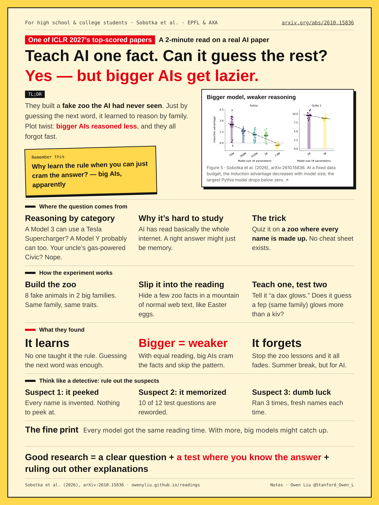

Community and Education for Teaching College and High School Student Researchers from Stanford University
Sobotka et al. · EPFL & AXA · One of ICLR 2027’s top-scored papers · arXiv:2610.15836
一篇论文，让我们如何写更好的论文？
They built a fake zoo the AI had never seen. Just by guessing the next word, it learned to reason by family. Plot twist: bigger AIs reasoned less, and they all forgot fast.
研究者给 AI 造了一个它从没见过的假动物园，发现只靠“猜下一个字”，AI 就能学会按家族推理；但在读的资料一样多时，越大的 AI 越不会推理，而且一不再读这些内容就很快忘掉。
Good research = a clear question + a test where you know the answer + ruling out other explanations.
1. Ask one clear question: teach AI one fact — can it guess the rest of its family?
2. Build a test where you know the answer: a fake zoo, with invented names, so the AI cannot cheat from memory.
3. Rule out the other explanations, like a detective: it did not peek, it did not just memorize the sentence, and it was not dumb luck.
4. State the fine print honestly: every model got the same reading time; with more, big models might catch up.
Download the Chinese poster (PNG)

Download the English poster (PNG)
Notes · Owen Liu @Stanford_Owen_L · Source: Sobotka et al. (2026), arXiv:2610.15836